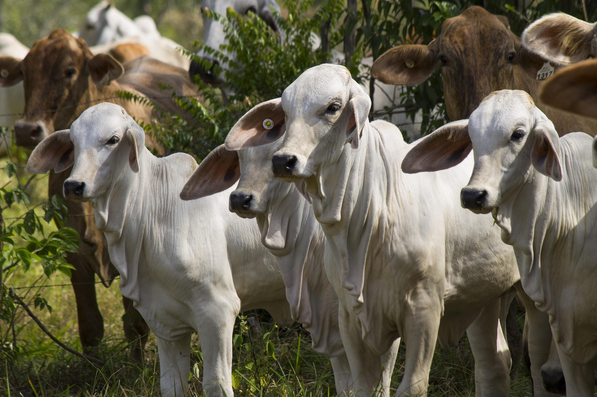

Meu blog de Agropecuaria

Do campo nasce a força que alimenta o mundo, e da agropecuária floresce o futuro
A agropecuária é um setor fundamental para a economia, responsável pela produção de alimentos e matérias-primas essenciais para diversas indústrias. Ela combina duas atividades principais: a agricultura, que se foca no cultivo de plantas, e a pecuária, que envolve a criação de animais para consumo humano, como carne, leite e ovos. A evolução tecnológica tem transformado este setor, introduzindo práticas mais sustentáveis e eficientes, como a agricultura de precisão e técnicas de manejo integrado de pragas. Além disso, a agropecuária desempenha um papel crucial na segurança alimentar global, mas enfrenta desafios significativos, como as mudanças climáticas e a necessidade de preservação ambiental. A busca por um equilíbrio entre produtividade e sustentabilidade é um dos principais focos atuais, visando garantir que as futuras gerações possam continuar a depender desses recursos vitais.